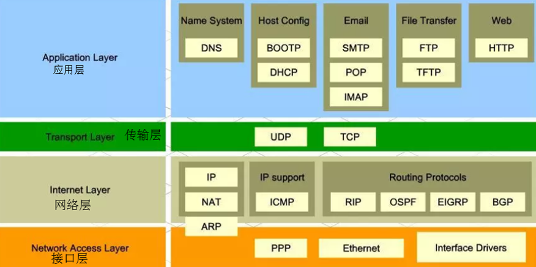
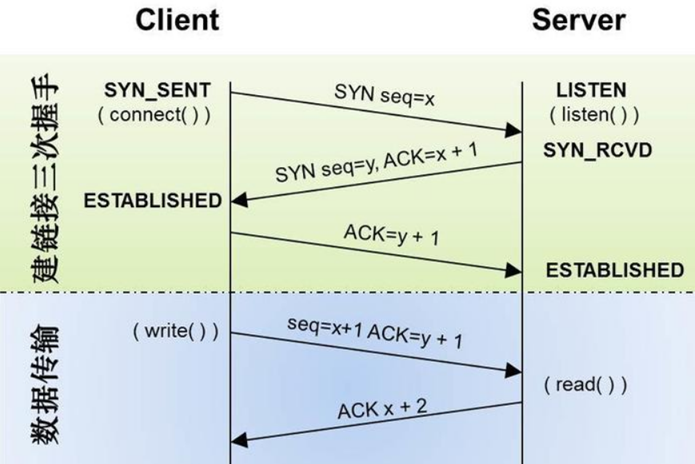
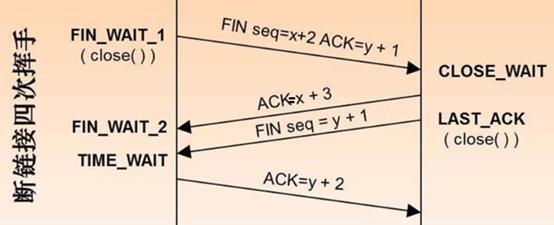

网络概念
交换机和路由器
交换机
端到端转发，基于MAC地址实现不同设备间的数据转发,转发速度快.
路由器
根据实际数据路线转发,基于网络IP地址实现不同网络间的数据转发
静态路由
指网络管理员配置好的转发路径,能够直接确定数据路线转发,大型和复杂的网络环境通常不宜采用静态路由,当连线一改变,则静态路由需要重新配置
动态路由
路由器根据算法自动地建立自己的路由表实现数据转发,由于需要路由器之间频繁地交换各自的路由表,从而安全保密性低.
网络协议
为数据交换而建立的规则、标准或约定的集合
协议栈

如上图所示,可以看到应用层的FTP协议是基于传输层的TCP协议来实现文件共享传输.而传输层的TCP协议则基于网络层的IP实现的
默认情况下FTP协议使用TCP端口中的 20和21这两个端口，其中20用于传输数据，21用于传输控制信息
TCP和UDP
TCP(传输控制协议)
面向连接的协议, 主要用于大量数据的场合,比如文件传输,一个TCP连接必须要经过3次握手才能建立

然后握手完成后,便开始进行数据传输了.
为什么要第3次握手,而不是2次握手？
避免重复连接请求,如果第一次连接请求超时了, 这时客户端假如重发请求,而第一次连接请求最终还是发送到服务器了,则服务器将再次重复接受到该请求,由于服务器之前已经确定过了第3次确定请求,所以服务器可以直接抛弃不管了(假如没有第3次确认,则服务器无法避免重连)
一个TCP断连则需要4次挥手才能断开

1.客户端发送一个FIN，用来关闭客户到服务器的数据传送
2.服务器收到这个FIN，它发回一个ACK，确认序号为收到的seq序号加1。
3.服务器关闭与客户端的连接，发送一个FIN给客户端A
4.客户端发回ACK报文确认，并将确认序号设置为收到序号加1
UDP(用户数据报协议)
无连接的协议, 主要用于不要求分组顺序到达、少量数据的传输场合, 数据传输效率高.缺点容易掉包.
QT网络编程
Qt Network模块提供的类允许编写 TCP/IP clients 和 servers、以及FTP和HTTP等常用协议(后续章节讲解FTP和HTTP)
而QTcpSocket和QTcpServer类则是实现TCP客户端和服务器用的.
QTcpSocket
在网络编程中, QTcpSocket支持以下两种访问方式
1)异步(非阻塞)访问
异步方式通过QTcpSocket的信号与槽实现,比如当我们调用connectToHost()连接服务器时,此时并非立即连接成功,所以我们需要等待connected()信号触发后,才知道连接成功,当然也可以通过信号error()来处理与服务器的连接发生错误的异常事件.
2) 同步(阻塞)访问
通过waitForXxxx()函数实现阻塞,最好使用多线程实现,否则的话,会导致界面也会进入阻塞.
QTcpSocket同步连接服务器步骤如下:
socket->connectToHost("192.168.1.101", 8088); //连接服务器 if (socket->waitForConnected(1000)) //阻塞等待1000ms qDebug("Connected!"); else return false; socket->write(data, len); //写数据 socket ->waitForBytesWritten();
socket->waitForReadyRead(); //等待读取数据
qDebug()<< "Received Bytes:" << socket->read(buf, sizeof(buf)-1);
socket ->disconnectFromHost(); //断开连接
socket ->waitForDisconnected();
未完待续,下章来学习客户端与服务器实例